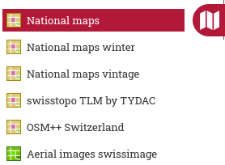
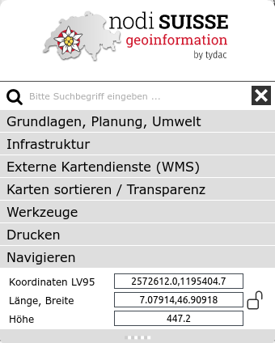
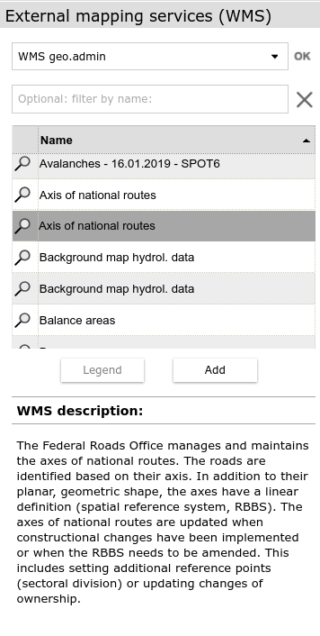
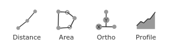

MAP+ Help
Content
Maps and Functions
Tools
Navigation
To navigate the map you have following options:

- Rotate map: Shift/Alt and drag with the mouse button pressed. Align North again: Press arrow function top right (this function is only visible when the map has been rotated)
- Zoom in/out: mouse wheel or +/- keys
- Pan: click and drag or arrow key
- Zoom window: Hold down shift key, click and drag
- Locate-function: GPS localization for mobile devices
- Initial view: click on "Home" button
- Show map in full screen
Search
You can search among::
- Addresses
- Parcel
- Municipality names
- ZIP, localities
- Points of Interest such as hotels, restaurants etc.
- Topography namings such as local names, mountain peaks, lakes etc.
Examples of quick and efficient search techniques:
- Address, Optingenstrasse 27, Bern: Type "opt 27"
- Address, Bahnhofstrasse 13 , Stettlen: Type "bahn 13 stett"
- Hotel Sternen Muri: Type "ster mur"
- Mountain Hut Blüemlisalp: Type "blüemlisalphü"
You can as well search for Map Themes:
- Term, for example "Pub"
- Or Paragliding, type "paragl"
Coordinate Display and Search
 Is the lock open = blue or green (depends on layout colors), the coordinates are displayed dynamically when moving the mouse over the map.
Is the lock open = blue or green (depends on layout colors), the coordinates are displayed dynamically when moving the mouse over the map.
 Is the lock closed = red (click on it to do so), the coordinates are only updated when clicking in the map. This will enable you to copy/paste coordinates of a give location.
Is the lock closed = red (click on it to do so), the coordinates are only updated when clicking in the map. This will enable you to copy/paste coordinates of a give location.
If you want to search for coordinates, enter the desired pair separated by comma or space and press enter.
Height: shown is the height without vegetation and buildings etc. (swisstopo swissALTI3D), the height with vegetation, buildings etc. (swisstopo swissSURFACE3D) and the difference.
Background Maps and Functions

As background you can choose from (can be varying depending on application):
- Surveying gray
- Surveying color
- Aerial images: swisstopo swissimage
- National maps by swisstopo
- National maps vintage by swisstopo
- swisstopo TLM by TYDAC (TLM: Topographic Landscape Model)
- OSM++ Schweiz: Enhanced OpenStreetMap-data
(OSM). OpenStreetMap (OSM) is a collaborative project to create a free editable map of the world. Enhanced means, that we enriched OSM data with other free data, such as relief, contours, more detailed data etc.
Additional Functions

- Choice of pre-cooked maps (Themes)
- Remove all layers
- Google StreetView:
- Navigate in StreetView. The map will be updated accordingly (Position and direction).
- Alternatively, you can move the StreetView object on the map. The closest StreetView recoridng is searched and shown.
- To have more space for the map and StreetView, you can remove the maps selection control (click on the three dots to the left of the map).
- Launch MAP+ 3D with a 3D-view of the area
Map Themes

Menu Basic, plannning, environment. A wide choice of layers relating to the following topics:
- Surveying, Landscape
- Planning, Aerial Images
- Environment
Menu Infrastructure, Tourism. A wide choice of layers relating to the following topics:
- Traffic and Energy
- Facilities, services
- Culture, Tourism, Recreation
Querying objects
Most topics can be queried. Simply click on the desired object. Information can contain database entries, images, hyperlinks, live generated profiles and more.
Example:

Legends
Legends and descriptions are available for most map themes. Click on the map name:

Adding external Web Map Services (WMS)
In MAP+ you can add external Web Mapping Services (WMS). A Web Map Service (WMS) is a standard protocol for serving georeferenced map images over the Internet. To add one or more WMS Layers, do as follows:
- Choose EXTERNAL MAPS (o the lower left)
- The following dialog is shown:

- WMS: Choose one service of the integrated list or type a connection manually and click Connect. A list of the WMS layers is shown (can optionally be filtered)
Once you choose a layer you have the following options:
- Read the description of the WMS (if one is available). Zoom restriction might be shown as well
- Click on a layer to show it on the map (be aware of possible zoom restrictions, se above)
- Legende: Show the legend if available (if not, the button is grayed out).
- Add: Add the layer to the map.
- Some layers maight not be transparent. To manage opacity of a layer, click on SORT / OPACITY
- To remove a layer, you have the following options: click on the remove all layers function or use the SORT menu
Tools
Following tools are available:
- Print PDF to scale and export maps under the mmenu Print /Export
- Measure, profile and redinling under the menu Tools
Print
 PDF Printing to scale
PDF Printing to scale
The following dialog is shown. Choose scale, layout, resolution and optionally enter a title for your map:
 IMPORTANT: To be able to print to scale you have to deactivate any scaling offered by your PDF software (such as fit or shrink to paper size). Example:
IMPORTANT: To be able to print to scale you have to deactivate any scaling offered by your PDF software (such as fit or shrink to paper size). Example:

 Export PDF/PNG
Export PDF/PNG
The map section can be exported as PDF (without border or layout, not to scale) or as PNG. For PDF, you can select the size and resolution of the map. For PNG, the size in pixels.
Measure

 Distance
Distance
Click on the desired start point and continue clicking any number of intermediate points. To terminate double-click. After finishing you can still add and move points around. To terminate the function, click again on the icon, choose any other function or switch to maps or search.
 Orthogonale measurement
Orthogonale measurement
For precise orthogonal measurement, proceed as follows:
- Change properties if you want (stroke style, font and size)
- Digitise the x-axis (base) first, e.g. a parcel boundary (two boundary points)
- Then an arbitrary number of ordinate points: e.g. house edges etc.
- To conclude: double click for the last ordinate point
- To exit the function, select the function again or close the dialog box
Instructions video ...

 Area
Area
Click on the desired start point and continue clicking any number of intermediate points. To terminate double-click. After finishing you can still add and move points around.To terminate the function, click again on the icon, choose any other function or switch to maps or search.
 Move / Change
Move / Change
Digitized objects (lines, surfaces) can be changed and/or moved. To do so, proceed as follows:
- Ensure that no measurement function is active
- Click on the object you want to move or edit
- To move the object, click on the blue image of the move and drag the object. If the lines are straight, click on one of the arrows that are not on the line (not in the center).
- To add points to the object, click on the lines in the desired positions and drag
- To delete points, click on the point, then perform Alt/Click
- To delete the whole object, select it and press Delete
Instructions video ...

Profile
 Distance measurement with profile generation
Distance measurement with profile generation
Click on the desired start point and continue clicking any number of intermediate points. To terminate double-click. A profile is generated and displayed in a window - now you can:
- Move the mouse over the profile. The position is shown in the map
- Click on the profile to enlarge it, i.e. for printing purposes
You can still add and move points of the distance polyline around, the profile is updated. To terminate the function, click again on the icon, choose any other function or switch to maps or search.

Redlining
General rules for all types of object:
Delete:
- Single object: Click on the object and click on the trash bin in the dialog shown
- All redlining: Click on the "Delete all" button
Save as Bookmark: Drawing can optionally be saved as bookmark. If you save a drawing, there is a tag added to the URL. You can either save the URL as a bookmark or copy the URL and for example send it to someone. In addition to the drawing all map parameters are saved (you can exactly return where you are).
 Symbols
Symbols
Click on the function to activate it. A choice of symbols will be shown. Choose any of the symbol and start drawing. Repeat as you like. To terminate click on the close button or on any other function. Symbols can be edited and moved any time after finishing. To do so, just click on the symbol, after that drag if you want to move it and/or choose another symbol.
 Text
Text
Click on the function to activate it. The text dialog will be shown. Choose font, size color and enter a text; click in the map to position. Repeat as you like. To terminate click on the close button or on any other function. Text objects can be edited and moved any time after finishing. To do so, just click on the blue text vertex point, after that drag if you want to move it and/or enter another text, change properties etc.
 Lines
Lines
Click on the function to activate it. The line styles dialog will be shown. Choose type, width and color; click any number of points in the map; to finish double-click. Repeat as you like. To terminate click on the close button or on any other function. Line objects can be edited and moved any time after finishing (see below).

 Areas / Circles
Areas / Circles
Click on the function to activate it. The area styles dialog will be shown. Choose type, width and colors; click any number of points in the map; to finish double-click. Repeat as you like. To terminate click on the close button or on any other function. Area objects can be edited and moved any time after finishing (see below).
Move / Change
Digitized redlining objects can be changed and/or moved. To do so, proceed as follows:
- Ensure that no redlining function is active
- Click on the object you want to move or edit
- To move the object, click on the blue image of the move and drag the object. If the lines are straight, click on one of the arrows that are not on the line (not in the center).
- To add points to lines or areas, click on the desired positions and drag
- To delete points from areas or lines, click on the point, then perform Alt/Click
- To delete the whole object, select it and press Delete
Mobile Version
The mobile version for smartphones has a reduced functionality, as follows:
- Background maps
- Add Layers
- Choice of pre-defined maps
- GPS localization
- Turn off all layers
- Zoom to inistial view
- Query objects
- Search